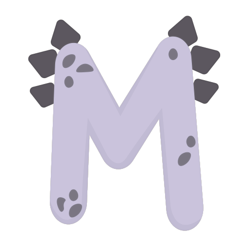

ПОРОДЫ КОШЕК И ИХ ОСОБЕННОСТИ

Здравствуйте!
На данном сайте вы сможете узнать о породах кошек и их особенностях.
Найти с ними общий язык,
и узнать породу вашей.
В данной подборке представлены 12 пород кошек.
Сиамская Кошка


Сиамская кошка Кошки сиамской породы описываются как грациозные и элегантные животные с тонкими изящными телами. Они имеют длинные тонкие конечности, длинную изящную шею, тонкую талию, аккуратную голову и большие выразительные глаза. Шерстяной покров сиамской кошки блестящий, шелковистый и чаще всего белого или желтовато-коричневого цвета.
Мейн-Кун


Мейн-ку́н- крупная порода кошек с пышной грубой шерстью и длинным хвостом.
У них сильное квадратное тело с широкой грудной клеткой и прямой спиной. Голова крупная с сильным подбородком. Уши также большие, круглые и направлены вперёд. Шерсть длинная и грубая, что придает кошке пушистый вид. Окраска может быть любой, но чаще всего встречается серый, черный или белый.
Бомбейская Кошка


Бомбейская кошка (бомбей)- это грациозный питомец с блестящей короткой шерстью черного цвета.
У нее длинное тело с тонкой талией и развитой мускулатурой. Ушки большие и широко расставленные. Голова круглая с развитым подбородком и выразительными глазами. Шерсть короткая, блестящая, словно лакированная, что придает этой породе характерный блестящий вид.
Персидская Кошка
 .
.

Персидская кошка обладает массивным телом с круглой головой и широкой грудной клеткой, что подчеркнуты длинной роскошной шерстью и пышными щечками. Из-за шерсти глаза кажутся маленькими и круглыми. Персы часто выглядят очень милыми и мягкими, как плюшевые мишки. Шерстяной покров тонкий и бархатистый на ощупь, требует тщательного ухода. Окрасы очень разнообразны, чаще всего встречаются однотонные
Русская Голубая Кошка
 .
.
 .
.

Русская голубая кошка — порода домашней кошки, признанная международными фелинологическими организациями, которая стала известна в России только с началом фелинологического движения. Русская голубая кошка c успехом разводится за рубежом. Она является одной из самых популярных пород короткошерстных кошек.
Манчкин
 .
.
 .
.

Манчкин — это современная порода кошек. При средней длине тела их лапки короче, чем у обычных кошек в 2-3 раза. В отличие от обычных кошек, которые, чтобы осмотреться, встают на задние лапки, манчкин садится на седалище и крепко упирается хвостом.
Бенгальская Кошка
 .
.
 .
.

Бенгальская кошка - это современная порода кошек, которую вывели в результате скрещивания диких азиатских леопардовых котов с традиционными европейскими и азиатскими короткошерстными кошками. Бенгальские кошки отличаются своим ярким окрасом и полосатым рисунком, напоминающим леопарда. Они также известны своей игривой, активной натурой и большой любовью к взаимодействию с людьми.
Сфинкс
 .
.

Сфинкс - это порода короткошерстных кошек. У них красивая и элегантная внешность, их кожа имеет бархатистую текстуру и покрыта тонким слоем коротких волосков. Кошки этой породы являются гипоаллергенными, что означает, что они обычно безопасны для людей с аллергией на кошачью шерсть.
Шотландская Вислоухая Кошка
 .
.
 .
.

Шотландская вислоухая - это порода кошек, которая получила свое название из-за своих ушей, которые складываются посередине. Эти коты являются короткошерстными, с блестящей и густой шерстью. Их тело мускулистое и атлетичное, что придает им элегантный вид. У шотландских вислоухих кошек круглые глаза разного цвета и характерная морда в форме сердечка.
Рэгдолл
 .
.

Рэгдолл - это порода кошек, известная своей длинной, густой и шелковистой шерстью, которая покрывает их тело от головы до хвоста. Они обладают крупным телосложением, их задние лапы немного длиннее передних, что придает им немного неуклюжий вид. У рэгдоллов круглые, большие глаза обычно разного цвета, и они известны своей спокойной и любвеобильной натурой.
Австралийский Мист(Австралийская Дымчатая Кошка)
 .
.

Австралийский Мист - это короткошерстная порода кошек, у которых тело крепко сложено с мускулами, которые видно на фоне короткой густой шерсти. Они имеют круглую голову с большими глазами обычно одного или двух цветов. Их хвост короткий или среднего размера и всегда толстый, а конечности достаточно сильные, чтобы позволять им прыгать высоко вверх на большое расстояние.
Сноу-Шу
 .
.
 .
.

Сноу-шу - это порода кошек с полудлинной шерстью и пушистым густым воротом, который покрывает их плечи и грудь. Они могут быть разных окрасов, в том числе абиссинской расцветки, в то время как у других может быть окрас табби или биколор. У сноу-шу массивные кости и сильное телосложение, они отличаются дружелюбным и ласковым характером.

Бенгальская Кошка

Бомбейская кошка
Разработчик:Икрянников Виктор